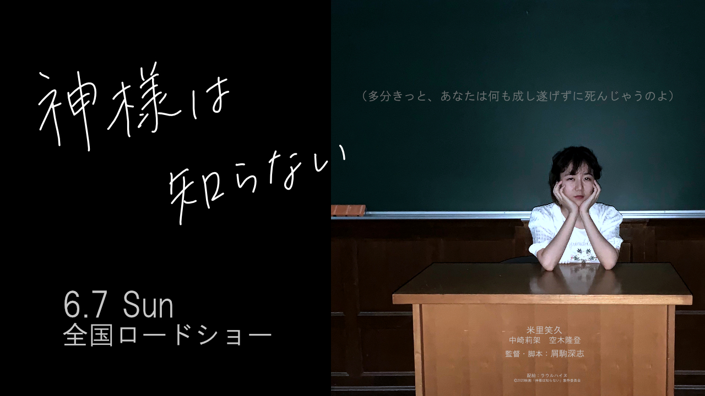

授業は最前列で受け、人目を気にせず発言、質問。課題は出さないのに、突然１万字のレポートを提出する。 大学に入学してすぐに周囲から浮いた存在になったエリコに興味を抱いたナオミは、「友達になりたい」と声をかける。 徐々に距離を縮めていくエリコとナオミだったが、その陰には二人を監視する一人の男の姿が。実はエリコには、誰も知らない＜秘密＞があった――
1999年生まれ。東京都出身。2015年にドラマ「ゾンビの倒し方」で女優デビュー。以降映画、ドラマ、CMと活躍の場を広げ、 2017年に映画『今宵は誰と』で主人公の三つ子の妹役を一人三役で演じ話題に。2018年にはドラマ「ライフアズワーク！」で主人公の恋人役を熱演し、 第13回ヒカレ・ドラマアワード最優秀助演女優賞を受賞。今作が満を持しての映画初主演。
1984年生まれ。東京都出身。2012年まで一般企業で働いていたが趣味で制作した短編映画を動画サイトにアップロードしたところ大反響を得て、勢いで脱サラ。 以降短編映画を数本監督し、2017年には『夏も冬も嫌い』で第7回東京短編映画祭作品賞を受賞。今作が長編映画初監督ながら、映画ファンの注目度は高い。